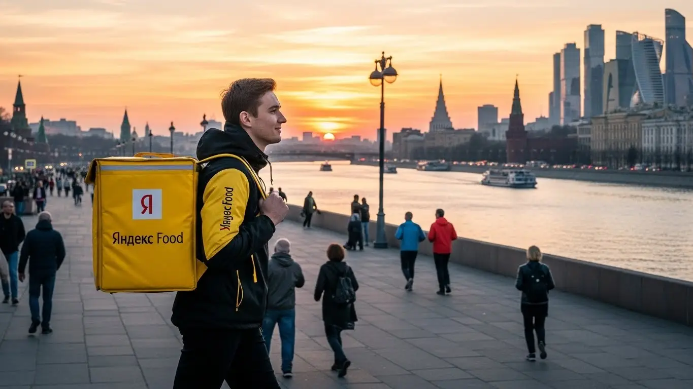
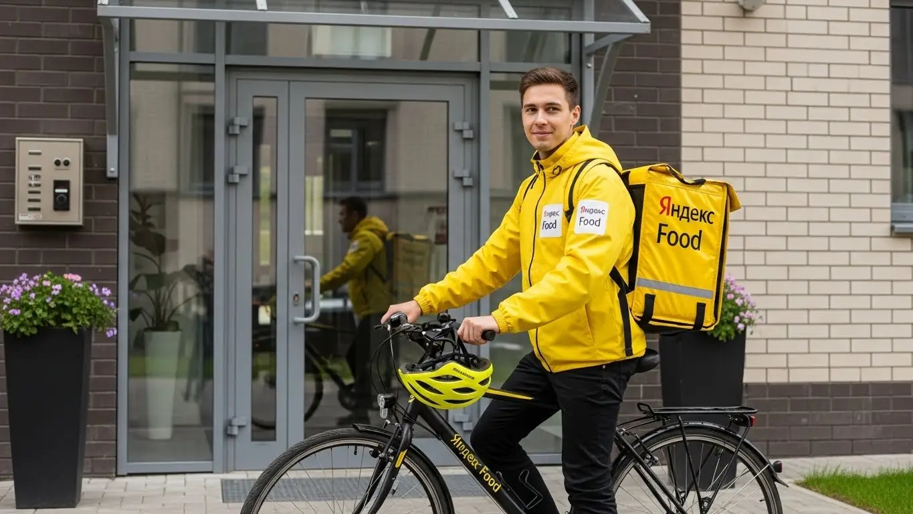

Работа курьером Яндекс Еды в Оренбурге в 2025-2026 году: доход и условия
- Работа курьером Яндекс Еды в Оренбурге: для кого эта вакансия и что вы получите
- Сколько вы будете зарабатывать курьером в Оренбурге: калькулятор дохода и разбор выплат
- Реальный заработок курьера в Оренбурге: смены и месячный доход
- График работы и форматы занятости
- Требования к кандидату и документы
- Самозанятость, налоги и юридическая чистота
- Пошаговое оформление и первый выход на линию в Оренбурге
- Пешком, на вело или на авто: что выгоднее в Оренбурге
- Районы, маршруты и «топовые» зоны заказов в Оренбурге
- Безопасность, страховка, штрафы и оплата простоя
- Плюсы и возможные минусы работы курьером в Оренбурге
- Реальные истории и отзывы курьеров из Оренбурга
- Ответы на главные вопросы о работе курьером Яндекс Еды в Оренбурге
- Короткие ответы на главные вопросы
- Итоги и ваш следующий шаг
Все города
Здорово, будущий коллега! Думаешь крутить педали или жечь бензин с жёлтым коробом за спиной? Смотришь на рекламу, где обещают золотые горы, а на деле боишься, что убьёшь подвеску на наших дорогах, застрянешь в вечной пробке на Чкалова или проспекте Победы и в итоге заработаешь только на ремонт? Правильно делаешь, что сомневаешься. Работа курьером Яндекс Еды в Оренбурге — это игра по местным правилам, и я расскажу тебе о них без прикрас.
Работа курьером в Оренбурге — это не просто «взял заказ — отвёз». Это чистая математика: бензин, налоги, амортизация велика или машины, твой рейтинг в системе и, главное, знание города. Нужно понимать, где в Степном лучше срезать, а куда в центре вообще не соваться в час пик, чтобы не простоять полчаса ради одного заказа. Большинство новичков сливаются в первый же месяц, потому что теряют деньги на глупых ошибках, о которых им никто не рассказал.
В этом гайде мы честно разберём, на чём выгоднее катать по Оренбургу — на своих двоих, велике или авто. Посчитаем, сколько реально остаётся в кармане после всех расходов, а не в рекламных буклетах. Я покажу на карте «рыбные» районы с высоким спросом и «мёртвые зоны». Расскажу, как оренбургская погода — от ледяного дождя до +40 летом — влияет на заработок, за что реально штрафуют и как этого избежать. А если тебе нужна краткая сводка условий и форма для быстрой заявки, то вся информация про работу курьером Яндекс Еда в Оренбурге собрана на отдельной странице. И да, сравним эту работу с другими вариантами подработки в нашем городе.
Меня зовут Алексей. Я сам не один год откатал с жёлтым коробом по Оренбургу, а сейчас держу свой небольшой таксопарк-партнёр и вижу всю эту кухню с двух сторон. Так что никакой рекламной шелухи и обещаний «стабильного дохода до 200 тысяч». Только факты, личный опыт и советы, которые сэкономят тебе нервы и деньги на старте. В общем, присаживайся поудобнее. Сейчас всё разложу по полочкам, как есть.
Чтобы ты не запутался во всех этих деталях, вот тебе короткий навигатор по статье.
Навигатор по статье: что нужно знать, чтобы не слить первый доход
В этой статье ты ТОЧНО узнаешь:
- Сколько реально можно заработать в Оренбурге за смену на машине, велике или пешком, и что останется после вычета расходов?
- В каких районах Оренбурга — Степном, центре или у ТРЦ «Армада» — больше всего заказов и как ловить «фиолетовые зоны»?
- Как за 10 минут оформить самозанятость, сколько платить налогов и почему это проще, чем кажется?
- За что реально могут понизить рейтинг или оштрафовать, и как работает бесплатная страховка на смене?
- Что выгоднее для Оренбурга: крутить педали, ходить пешком или жечь бензин?
- Как работает «оплата простоя» и почему она защищает твой доход, даже если заказов мало?
А если тебе некогда читать всю статью — переходи сразу к заключению, где ты найдёшь короткие ответы на все эти вопросы и указания, в каких разделах искать подробности.
А для тех, кто любит цифры, собрал ключевые показатели по работе в Оренбурге в одной картинке.
Работа курьером в Оренбурге: ключевые цифры
Доход в час
350–500 ₽
В часы пик с бонусами и повышенным спросом
Заработок за смену
2800–4000 ₽
Средний доход за 8-часовой слот (до вычета расходов)
Расходы на смену
200–400 ₽
На питание, связь и мелкий ремонт (для авто выше)
Чаевые от клиентов
~30%
Доля заказов с чаевыми, зависит от района и вежливости
Работа курьером Яндекс Еды в Оренбурге: для кого эта вакансия и что вы получите
Кому подойдёт эта работа в Оренбурге
Давай начистоту: работа курьером — это не для всех, но для многих это отличный вариант. В Оренбурге эта вакансия идеально подходит студентам местных вузов вроде ОГУ или ОГАУ: пары закончились — можно выйти на пару часов, заработать на свои расходы и ни от кого не зависеть. Похожая ситуация и у тех, кто ищет дополнительный доход к основной работе. Свободный график позволяет выполнять заказы по вечерам или на выходных.
Отдельно стоит сказать о тех, кто ищет работу без опыта. В Яндекс Еде не требуют резюме на пять страниц и рекомендаций. Нужен только смартфон, желание двигаться и ответственность. Конечно, это отличный вариант и для водителей-курьеров на своём авто. Заказов для них всегда хватает, особенно на дальние расстояния, а доход получается ощутимо выше. Главное, что всех этих людей объединяет — потребность в гибком графике и быстрых деньгах. Ежедневные выплаты на карту — одно из ключевых преимуществ сервиса.

Главные преимущества для жителей районов Степной, 23-й микрорайон, Центральный
Одно из главных удобств в Оренбурге — возможность работать прямо в своём районе. Тебе не нужно тратить час-полтора, чтобы добраться до «офиса» через пробки на проспекте Победы или улице Чкалова. Живёшь, например, в Степном посёлке — включаешь приложение «Яндекс Про», где собраны все заказы, и начинаешь доставлять из местных кафе и магазинов по соседним домам.
Это же правило работает и для других крупных спальных районов. В 23-м микрорайоне полно многоэтажек, а значит, и клиентов. В Центральном, особенно в районе улицы Советской, концентрация ресторанов максимальная. Ты просто выбираешь на карте зону рядом с домом и работаешь там, где знаешь каждый двор и подъезд, экономя время, силы и деньги на проезд.
Краткое обещание по доходу и условиям
Если говорить о деньгах, то заработок курьера в Оренбурге вполне реальный. При частичной занятости, выходя на 3–4 часа в день, можно получать 1000–1500 рублей. Если же рассматривать это как основную работу и уделять ей 8–10 часов, то доход водителя-курьера может доходить до 3500–4000 рублей за смену. В месяц при полной занятости реально выходить на 70 000–80 000 рублей.
Ключевые условия работы просты и понятны. Во-первых, это свободный график — ты сам решаешь, когда и сколько работать. Во-вторых, ежедневные выплаты: заработал сегодня — получил деньги на карту в тот же или на следующий день. В-третьих, начать можно без опыта. Достаточно пройти короткое онлайн-обучение, получить термосумку и можно выходить на линию. Никаких сложных собеседований и долгого ожидания.
Сколько вы будете зарабатывать курьером в Оренбурге: калькулятор дохода и разбор выплат
Из чего складывается доход курьера
Твоя зарплата — это не фиксированная ставка, а сумма нескольких составляющих. Важно понимать, как это работает, чтобы управлять своим доходом. Во-первых, есть базовая оплата за каждый выполненный заказ. Во-вторых, к ней добавляется доплата за расстояние — чем дальше везти, тем больше денег. В-третьих, в часы пик (обед, ужин, выходные) и в плохую погоду включаются повышающие коэффициенты, которые могут умножить стоимость заказа в 1,5–2 раза.
Кроме того, есть система бонусов за выполнение определённого количества заказов или работу в конкретных зонах. Не стоит забывать и про чаевые — они полностью твои. Важное отличие Яндекс Еды от многих других сервисов — это оплата простоя. Если ты вышел на плановый слот, а заказов мало, сервис всё равно начислит минимальную гарантированную сумму. Для водителей-курьеров на дальних маршрутах также может быть компенсация проезда. Вся эта информация прозрачно отображается в приложении «Яндекс Про».
Как пользоваться калькулятором дохода
Чтобы прикинуть свой потенциальный заработок, на сайте есть специальный калькулятор. Пользоваться им просто: сначала выбираешь свой город — Оренбург. Затем указываешь, как планируешь доставлять: пешком, на велосипеде или на личном автомобиле.
Далее выставляешь, сколько часов в день и сколько дней в неделю готов работать. Например, 4 часа 5 дней в неделю как подработку или 8 часов 6 дней в неделю для полной занятости. После нажатия кнопки «Рассчитать» система покажет примерный диапазон твоего дневного и месячного дохода. Это, конечно, не стопроцентная гарантия, но очень близкий к реальности ориентир, который поможет принять решение.
Прикинь свой доход курьером в Оренбурге
8 часов
5 дней
Твой примерный доход в месяц:
Это ориентировочный расчёт. Реальный заработок зависит от типа доставки, спроса, бонусов и чаевых. Сумма указана до вычета налога (6%) и расходов на транспорт.
Этот калькулятор дает хороший ориентир. А если хочешь увидеть полные условия, актуальные требования и сразу подать заявку, загляни на страницу про работу курьером Яндекс Еда в твоём городе — там всё собрано в одном месте.
Примеры расчёта для пешего, вело- и авто‑курьера в Оренбурге
Давай на конкретных примерах, сколько зарабатывает курьер в Оренбурге.
- Пеший курьер. Студент, для которого это подработка, работает в центре Оренбурга, в районе улиц Советской и Кирова. Здесь много кафе и заказы на короткие расстояния. Он выходит на 4 часа после учёбы, с 17:00 до 21:00, и за это время успевает сделать 8–10 заказов. Его средний заработок за такую смену составит 1200–1600 рублей.
- Велокурьер. Парень работает в спальных районах, например, курсирует между Степным и 20-м микрорайоном. На велосипеде он быстрее пешего и не зависит от пробок, поэтому может выполнить 15–18 заказов за 6-часовую смену в субботу. Его доход за такой день будет в районе 2200–2800 рублей.
- Водитель-курьер на своем авто. Мужчина работает полный день, 8–10 часов. Он берёт заказы по всему городу, включая дальние доставки в Ростоши или Южный. В плохую погоду или в вечер пятницы его доход растёт за счёт коэффициентов. За такую смену он может заработать 3500–4500 рублей, а иногда и больше, если поймает несколько крупных заказов из гипермаркетов.
Реальный заработок курьера в Оренбурге: смены и месячный доход
Давай начистоту, без рекламных обещаний. Твой заработок курьером в Оренбурге зависит от трёх вещей: сколько часов ты готов работать, на чём передвигаешься и как используешь голову. Никто не будет сыпать тебе деньги просто за то, что ты вышел на линию. Но если подойти к делу с умом, можно зарабатывать вполне приличные деньги, которые многим в нашем городе и не снились на обычной работе с фиксированным окладом.
Главное понять: это не зарплата в классическом понимании, а именно доход. Он складывается из множества факторов — от количества заказов до погоды за окном. В один день ты можешь сделать 2000 рублей за 8 часов, а в другой, попав на пиковый спрос и бонусы, — 4000 рублей за то же время. Стабильность приходит с опытом, когда начинаешь понимать логику системы и ритм города.
Диапазон дохода для подработки и полной занятости
Цифры — вещь упрямая, поэтому давай сразу к ним. Я собрал средние показатели по Оренбургу, на которые можно ориентироваться. Учти, это суммы «грязными», до вычета налога самозанятого (6%) и расходов на топливо для автокурьеров.
Если ты ищешь подработку на 2–4 часа в день, например, после учёбы в ОГУ или основной работы, расклад примерно такой. Пеший курьер в центре может рассчитывать на 600–1200 рублей за смену. Велокурьер, который покрывает большие расстояния в спальных районах вроде Степного, заработает 800–1500 рублей. Автокурьер за это же время сделает 1200–2200 рублей, но часть уйдёт на бензин. В месяц такая подработка приносит от 15 000 до 35 000 рублей, в зависимости от регулярности выходов.
При полной занятости, когда ты работаешь по 8–10 часов 5–6 дней в неделю, цифры совсем другие. Пеший курьер может стабильно зарабатывать 40 000–55 000 рублей в месяц. Велокурьер — 50 000–75 000 рублей, особенно в тёплое время года. Самый высокий доход, конечно, у водителей-курьеров на своем авто: здесь заработок может достигать 80 000–120 000 рублей в месяц. Но и расходы на машину выше, это нужно всегда держать в голове.
Сравнение дохода в Оренбурге по типам занятости
| Тип курьера | Подработка (2–4 часа/день) | Полная занятость (8–10 часов/день) |
|---|---|---|
| Пеший курьер | 600 – 1 200 ₽/смена | 40 000 – 55 000 ₽/месяц |
| Велокурьер | 800 – 1 500 ₽/смена | 50 000 – 75 000 ₽/месяц |
| Водитель-курьер | 1 200 – 2 200 ₽/смена | 80 000 – 120 000 ₽/месяц (до вычета расходов) |
В качестве примера: один из моих водителей, парень 25 лет, работает почти каждый день по 8–9 часов. Он хорошо знает город, не брезгует заказами из пригорода и активно работает в плохую погоду. Его средний доход за месяц после вычета расходов на топливо и налог самозанятого составляет около 85 000 рублей. Он не сидит на месте, постоянно анализирует карту спроса в приложении Яндекс Про и понимает, где будут деньги.
В итоге, твой реальный заработок напрямую зависит от твоей стратегии и готовности работать. Не жди манны небесной, но знай, что потолка здесь практически нет. Мой совет: начни с подработки, пойми, как всё устроено, и постепенно увеличивай нагрузку, если увидишь, что дело идёт.
Как район, время суток и погода влияют на доход
Запомни золотое правило курьера: деньги не распределены по городу равномерно. Твой заработок — это не просто плата за время, а результат работы в правильном месте в правильное время. В Оренбурге, как и везде, есть свои «рыбные места» и часы пик, которые нужно знать.
Самые денежные часы — это обеденное время (примерно с 12:00 до 15:00) и вечер (с 18:00 до 22:00). В это время люди массово заказывают еду из ресторанов и кафе, поэтому заказов в Яндекс Еде становится больше. Пятница и выходные — это вообще отдельная история, спрос может быть высоким почти весь день. В такие моменты на карте в «Яндекс Про» появляются зоны с повышенным коэффициентом — фиолетовые и красные области, где за каждый заказ платят в 1,5–2 раза больше. Работать в центре, в районе улицы Советской, в эти часы выгоднее всего.
Погода — твой лучший друг и помощник. Как только в Оренбурге начинается дождь, сильный снегопад или, наоборот, летняя жара под 40 градусов, люди предпочитают сидеть дома. Количество заказов резко растёт, а число курьеров на линии падает. Это идеальный момент, чтобы заработать: коэффициенты взлетают до небес, а клиенты становятся щедрее на чаевые. Да, работать в таких условиях тяжело, и хороший термокороб становится незаменим, но 2–3 часа в непогоду могут принести столько же, сколько целый день при ясном небе.
Советы по увеличению заработка от опытных курьеров
Чтобы зарабатывать больше, не обязательно работать дольше. Нужно работать умнее. Вот несколько проверенных советов, которые помогут тебе оптимизировать свои смены и повысить доход без лишних усилий.
Во-первых, грамотно выбирай слоты и зоны. Не гоняйся за одним заказом с высоким коэффициентом через весь город. Лучше выбрать зону с плотной застройкой и большим количеством заведений, например, центр или крупные ТРЦ вроде «Армады» и «Гулливера». Там заказы будут падать один за другим, и ты сэкономишь время и силы на перемещениях. Бери плановые слоты на вечернее время и выходные — это гарантирует тебе работу в самый пик.
Во-вторых, используй свой транспорт по назначению. Если ты водитель-курьер на своем авто, не бойся брать дальние заказы между районами или в пригород — они хорошо оплачиваются. Но если приехал в центр, где пробки и негде парковаться, иногда выгоднее оставить машину и последние 200–300 метров до клиента пройти пешком. Велосипед идеален для спальных районов типа 23-го микрорайона, где можно быстро перемещаться между многоэтажками, срезая путь через дворы. Пеший курьер максимально эффективен в самом сердце города, где всё в шаговой доступности.
График работы и форматы занятости
Одно из главных преимуществ этой работы — гибкость. Ты сам себе начальник и сам решаешь, когда и сколько работать. Это идеальный вариант для тех, кто не хочет сидеть в офисе с 9 до 6, или кому нужен дополнительный источник дохода, который легко вписать в свой основной график. Система предлагает разные форматы, от коротких вылазок на пару часов до полноценных рабочих смен.
Приложение «Яндекс Про» даёт тебе полную свободу. Ты можешь заранее запланировать свои смены на неделю вперёд, выбрав удобные слоты, или просто выходить на линию спонтанно, когда появилось свободное время. Никто не будет стоять над душой и контролировать каждый твой шаг. Главное — выполнять взятые на себя обязательства, если ты записался на плановый слот.
Подработка после учёбы или основной работы
Совмещать доставку с другими делами проще простого. Это отличный способ для студентов заработать на свои расходы, а для людей с основной работой — создать финансовую подушку безопасности или быстрее закрыть кредит.
Представь себе студента Оренбургского аграрного университета. Он учится до 15:00, потом отдыхает, делает домашние задания, а в 19:00 садится на велосипед и выходит на смену на 3-4 часа. Работает в своём районе, развозит ужины. За вечер спокойно делает 1000–1500 рублей. В месяц набегает 20 000–25 000 рублей — отличная прибавка к стипендии, которая не мешает учёбе.
Или другой пример: менеджер, который работает в офисе до 18:00. У него есть своя машина. По вечерам в будни он хочет отдохнуть, но в пятницу и субботу, когда спрос на доставку максимальный, он выходит на линию на 4-5 часов. За два таких вечера он может заработать 5000–7000 рублей. За месяц это дополнительные 20 000–30 000 рублей, которые можно потратить на отпуск или обслуживание автомобиля.

Полная занятость: как выглядит типичный день курьера
Если ты рассматриваешь доставку как основную работу, твой день будет строиться вокруг городских ритмов и пиков спроса. Типичный день курьера на полной занятости — это не хаотичная езда по городу, а продуманная стратегия.
Например, автокурьер выходит на линию около 10 утра. Начинает в спальном районе, например, в Южном, выполняя утренние заказы из магазинов и «Яндекс Лавки». Ближе к 12 часам он смещается в центр, где начинаются обеденные заказы из ресторанов на улице Кирова и проспекте Победы. После 15:00, когда обеденный пик спадает, он берёт пару часов на отдых и обед. В это время можно выполнять длинные, но не срочные доставки из «Яндекс Маркета» в рамках сервиса Яндекс Доставка.
К 18:00 он снова в строю, готовый к вечернему наплыву заказов. Это самое прибыльное время. Он работает до 22:00–23:00, стараясь не отказываться от заказов в зонах с высоким коэффициентом. За день он может проехать 100–150 км по городу, выполнить 25–40 заказов и заработать 4000–6000 рублей. Это напряжённая, но хорошо оплачиваемая работа.
Как планировать слоты и выходы через приложение «Яндекс Про»
Приложение «Яндекс Про» — твой главный рабочий инструмент. Именно через него ты получаешь заказы, строишь маршруты и планируешь свой график. Разобраться в нём несложно, но есть несколько моментов, которые помогут тебе работать эффективнее.
В приложении есть два основных режима: свободные выходы и плановые слоты. Свободный выход — это когда ты просто нажимаешь кнопку «На линию» и начинаешь работать в любое удобное время. Плановые слоты — это заранее забронированные смены на определённое время и в определённой зоне. Их преимущество в том, что они часто идут с бонусами или гарантированным минимальным доходом. Но если ты записался на слот, ты обязан его отработать.
Очень важно не опаздывать на начало планового слота. Система отслеживает твою пунктуальность, и регулярные опоздания могут негативно сказаться на твоём рейтинге. А чем выше рейтинг, тем больше у тебя приоритет при распределении заказов. Поэтому, если выбрал слот с 18:00 до 22:00 в центре, постарайся быть в этой зоне уже в 17:50, чтобы вовремя начать смену и не упустить самые выгодные заказы.
Мой совет новичку, который только решил стать курьером: начни со свободных выходов в знакомом районе, чтобы привыкнуть к процессу. А когда почувствуешь себя увереннее, начинай бронировать плановые слоты на пиковые часы — это самый верный способ обеспечить себе стабильный и высокий доход.
Требования к кандидату и документы
Многие думают, что для работы курьером нужны какие‑то особые навыки или стопка бумаг. На деле всё гораздо проще, но есть несколько ключевых моментов, без которых не обойтись. Давай разберёмся, какие требования и условия нужно выполнить на старте, чтобы не было сюрпризов.
Возраст, гражданство и базовые условия
Главное и самое строгое правило — возраст. Начать работу курьером в Яндекс Еде можно только с 18 лет. Никаких исключений, даже с согласия родителей, здесь нет. Это связано с материальной ответственностью и юридическим статусом самозанятого, который в полной мере доступен совершеннолетним.
Второе условие — гражданство. Сервис сотрудничает с гражданами Российской Федерации, а также стран Евразийского экономического союза (ЕАЭС): Армении, Беларуси, Казахстана и Кыргызстана. Если у тебя паспорт одной из этих стран, проблем с оформлением не будет.
Что касается физической формы, то от тебя не требуют олимпийских рекордов. Эти базовые условия работы одинаковы для всех: и для пешего курьера, и для курьера на велосипеде, и для того, кто доставляет заказы на своем авто. Пешему важна выносливость, чтобы проходить 10–15 километров за смену. Велокурьеру — умение уверенно держаться в городском потоке. А водителю — внимательность и стаж вождения, хотя работа всё равно подразумевает, что ты будешь выходить из машины и доносить заказы до двери.
Какие документы нужны для работы курьером
Чтобы всё прошло гладко и быстро, подготовь документы заранее. Список короткий, и почти всё у тебя уже есть под рукой. Тебе понадобятся:
- Паспорт. Основной документ для подтверждения личности и возраста. Нужен будет его скан или качественное фото.
- ИНН (Идентификационный номер налогоплательщика). Он необходим для регистрации в качестве самозанятого. Если ты не помнишь свой номер, его можно за пару минут бесплатно узнать на сайте ФНС по паспортным данным.
- Личная банковская карта. Подойдёт карта любого российского банка (МИР, Visa, Mastercard). Важно, чтобы она была оформлена именно на твоё имя, так как выплаты приходят только на личный счёт курьера.
- Медицинская книжка. Она обязательна, если ты планируешь доставлять готовую еду из ресторанов и кафе. Для доставки посылок или продуктов из магазинов она может не требоваться, но я настоятельно советую её сделать. В Оренбурге это займёт около недели, но зато откроет доступ ко всем типам заказов, а значит, и к большему доходу.
Собрав этот небольшой пакет, ты пройдёшь регистрацию максимально быстро и сможешь стать курьером без лишних задержек. По моему опыту, именно отсутствие медкнижки или незнание своего ИНН чаще всего тормозят новичков на старте.
Можно ли работать с 16 лет и какие есть альтернативы
Часто спрашивают, можно ли устроиться в Яндекс Еду в 16 или 17 лет. Отвечаю честно и прямо: нет, нельзя. Как я уже говорил, минимальный возраст для сотрудничества — 18 лет. Это не прихоть компании, а требование законодательства, связанное с полной дееспособностью, возможностью оформить самозанятость и нести ответственность за доставляемые товары.
Если тебе ещё нет 18, но работать хочется, не стоит отчаиваться. Рассмотри другие варианты подработки в Оренбурге, которые доступны подросткам. Например, можно раздавать листовки, помогать в небольших семейных кафе или поискать другие вакансии через городские центры занятости для молодёжи. Это будет хороший опыт, а как только исполнится 18, сможешь без проблем прийти в доставку и начать зарабатывать уже совсем другие деньги.
Краткий вывод: Чтобы стать курьером Яндекс Еды, тебе должно быть 18 лет, ты должен быть гражданином РФ или ЕАЭС и иметь на руках паспорт, ИНН, банковскую карту и медкнижку. Это базовые требования, которые открывают доступ к стабильному доходу.
Совет из практики: Не откладывай оформление медкнижки. Начни делать её, как только подал заявку. Пока твои данные будут проверять, ты как раз успеешь её получить и сможешь выйти на линию сразу после одобрения, не теряя ни дня.
Самозанятость, налоги и юридическая чистота
Многих новичков пугают слова «самозанятость» и «налоги». Кажется, что это сложно, долго и связано с бумажной волокитой. На самом деле, это самый простой и прозрачный способ работать официально. Давай разложу по полочкам, как устроено оформление самозанятости (НПД) и почему это выгодно в первую очередь тебе.
Почему курьеры Яндекс Еды работают как самозанятые
Сотрудничество с Яндекс Едой строится на партнёрских отношениях, а не на трудовом договоре. Ты не сотрудник в классическом понимании, а независимый исполнитель. Формат самозанятости (или налог на профессиональный доход, НПД) идеально для этого подходит. Он даёт тебе полную свободу и несколько весомых плюсов.
Во-первых, это официальный доход. Все заработанные деньги — «белые». Ты можешь спокойно взять кредит, подтвердить доход для получения визы или для любых других целей. Во-вторых, это простота. Никаких бухгалтеров, деклараций и походов в налоговую. Все операции, включая отправку чеков, автоматизированы и проходят через приложения Яндекс Про и «Мой налог». В-третьих, это легальность. Ты работаешь вчистую, платишь небольшой налог и спишь спокойно, не боясь никаких проверок. По сути, ты — сам себе начальник, который легально получает деньги за свою работу.
Как за 10 минут оформить самозанятость через «Мой налог»
Регистрация статуса самозанятого занимает не больше времени, чем заказ пиццы. Всё делается онлайн и абсолютно бесплатно. Вот простая пошаговая схема:
- Скачай приложение. Найди в Google Play или App Store официальное приложение ФНС России — «Мой налог».
- Начни регистрацию. Открой приложение и выбери самый простой способ — «Регистрация по паспорту РФ».
- Отсканируй паспорт. Наведи камеру телефона на главный разворот паспорта. Приложение само распознает все данные. Проверь, чтобы всё было верно.
- Сделай селфи. Приложение попросит тебя сфотографироваться. Это нужно для подтверждения личности, чтобы никто не смог зарегистрироваться по твоим документам.
- Подтверди регистрацию. После проверки данных (обычно это занимает от 5 до 15 минут) ты получишь уведомление, что официально стал плательщиком налога на профессиональный доход.
Вот и всё. Никаких заявлений, очередей и госпошлин. Весь процесс интуитивно понятен и рассчитан на обычного человека, а не на специалиста по налогам.
Сколько и как платить налоги
Теперь о самом главном — о деньгах. Ставка налога для самозанятого курьера, работающего с Яндексом, фиксированная — 6% от дохода. Это процент, который ты платишь с поступлений от юридических лиц. Никаких других скрытых сборов или комиссий в пользу государства нет.
Процесс уплаты налога полностью автоматизирован. Когда Яндекс переводит тебе выплаты за заказы, информация об этой сумме автоматически передаётся в приложение «Мой налог». В начале следующего месяца (например, в начале марта за февраль) приложение само посчитает итоговую сумму налога и пришлёт тебе уведомление. Тебе останется только зайти в приложение и нажать кнопку «Оплатить», выбрав свою банковскую карту. Сделать это нужно до 28 числа. Это гораздо проще и безопаснее, чем работать за «серый» кеш и постоянно переживать, что к тебе могут возникнуть вопросы у налоговой.
Краткий вывод: Оформление статуса самозанятого — это не страшно, а выгодно. Это даёт тебе официальный доход, юридическую чистоту и минимальную налоговую ставку в 6%, а весь процесс от регистрации до уплаты налогов управляется через смартфон.
Совет из практики: Не бойся этого статуса. Один из моих водителей долго сомневался, а потом ему понадобилась справка о доходах для ипотеки. За три месяца работы как самозанятый он сформировал в приложении «Мой налог» официальный документ, который банк принял без вопросов. Работа вбелую открывает двери, которые закрыты для тех, кто получает зарплату в конверте.
Пошаговое оформление и первый выход на линию в Оренбурге
Шаг 1–2: анкета и онлайн‑обучение
Многие думают, что устроиться курьером — это долго и муторно, с кучей бумажек и собеседований. На деле всё гораздо проще: условия работы в Яндекс Еде заточены на то, чтобы ты как можно скорее начал зарабатывать. Первый шаг — короткая анкета на сайте. В ней стандартные вопросы: ФИО, номер телефона, город (указываем Оренбург), гражданство. Никаких эссе на тему «почему я хочу стать курьером» писать не нужно.
После одобрения анкеты на телефон придёт ссылка на короткое онлайн-обучение. Это не нудные лекции, а несколько роликов или слайдов, где по делу объясняют основы: как пользоваться приложением «Яндекс Про», общаться с клиентами и сотрудниками ресторанов, что делать в нестандартных ситуациях. В конце будет небольшой тест, чтобы проверить, что ты всё понял. Не переживай, сдать его легко, можно и пересдать. Весь этот этап занимает от силы час-полтора, и пройти его можно прямо с телефона.
Шаг 3: получение сумки и доступа к заказам в Оренбурге
Когда обучение пройдено, остаётся последний шаг — получить экипировку. Главное — это фирменный термокороб (или термосумка). Без него система не даст доступ к заказам из ресторанов и магазинов, потому что важно довезти еду горячей, а продукты — не растаявшими. В Оренбурге термокороб можно получить у партнёра Яндекса или в специальном центре для курьеров.
Все доступные адреса и время работы появятся в приложении «Яндекс Про». Иногда есть даже опция доставки на дом. Как только ты получишь сумку и пройдёшь фотоконтроль (просто сфотографируешь себя с ней в приложении), твой аккаунт активируют. С этого момента ты полноправный курьер и можешь принимать заказы.
Шаг 4: первый слот и первый доход
Итак, термокороб на руках, аккаунт активен. Теперь у тебя свободный график. Заходишь в «Яндекс Про», открываешь расписание и выбираешь свой первый слот. Слот — это временной промежуток, в который ты будешь выполнять доставки, например, с 18:00 до 22:00. Для начала советую выбрать короткий слот на 3–4 часа в том районе Оренбурга, который ты хорошо знаешь. Так будет спокойнее: не придётся плутать по незнакомым дворам.
Выбрал слот, подтвердил, и в назначенное время выходишь на линию. Приложение сразу начнёт искать для тебя ближайший заказ. Помню свой первый день: немного волновался, но уже через час освоился. Забрал заказ из кафе на Советской, отнёс в офис неподалёку, и тут же на балансе в приложении увидел первые деньги. Это крутое чувство, когда понимаешь, что от анкеты до реального дохода прошёл всего один день. А благодаря системе ежедневных выплат эти деньги можно сразу вывести.
Из практики: студент из ОГУ искал подработку и зарегистрировался у нас в понедельник утром. Пока был на парах, прошёл онлайн-обучение. После обеда заехал в офис за сумкой, а вечером уже вышел на 4-часовой слот в своём районе около проспекта Гагарина. Спокойно сделал 7 заказов и заработал первые 1100 рублей. Говорит, не ожидал, что всё будет так быстро и без бюрократии.
В итоге, весь процесс от заявки до первого заработка в Оренбурге реально уложить в один день, даже если у тебя нет опыта. Система простая и понятная — минимум формальностей, чтобы ты мог быстрее начать работать и видеть результат.
Пешком, на вело или на авто: что выгоднее в Оренбурге
Пеший курьер: для центра и плотной застройки в Оренбурге
Если у тебя нет машины или велосипеда, не беда. Пеший курьер — отличный старт, особенно если планируешь работать в центре Оренбурга. Вся историческая часть города — улицы Советская, Кирова, Ленинская, проспект Победы — твоя территория. Здесь куча кафе, ресторанов и магазинов, а заказы в основном на короткие расстояния, в пределах 1–2 километров. Машины тут часто стоят в пробках, а ты спокойно срезаешь путь через дворы.
Работая пешком, ты не тратишься на бензин и обслуживание транспорта. По сути, твои расходы — это удобная обувь и мобильный интернет. Да, много заказов за час не сделаешь, но за счёт их высокой плотности можно стабильно зарабатывать. Такой формат идеален для студентов, которым нужна подработка на несколько часов в день, или для тех, кто хочет совмещать работу с полезной физической активностью. Доход будет не самым высоким, но и вложений — ноль.
Велокурьер: быстрые доставки между спальными районами
Велосипед — золотая середина между скоростью и затратами. Для Оренбурга, где спальные районы вроде Степного или Северо-Восточного довольно большие, это идеальный вариант. Как велокурьер, ты легко покрываешь расстояния в 3–5 км, которые пешком идти долго, а на машине — не всегда рентабельно. Ты не зависишь от пробок на проспекте Дзержинского или улице Чкалова в час пик и можешь быстро перемещаться между точками.
Плюс это отличный «оплачиваемый фитнес». Вместо того чтобы платить за спортзал, ты крутишь педали и получаешь за это деньги. Доход велокурьера, как правило, выше, чем у пешего, так как он успевает выполнить больше заказов за то же время. Если у тебя есть свой велосипед, считай, ты уже готов к работе. Если нет — можно купить недорогой или взять в аренду, он быстро себя окупит.
Водитель‑курьер: заказы по всему городу и пригороду Ростоши, Южный, Пригородный
Работа курьером на своем авто открывает доступ к самым денежным заказам. Это твой главный козырь, когда нужно везти заказ с одного конца Оренбурга на другой, например, из центра в Авиагородок или в пригородные посёлки — Ростоши, Южный, Пригородный. Такие заказы оплачиваются значительно выше из-за большого расстояния. Кроме того, на машине ты можешь брать крупные и тяжёлые заказы из гипермаркетов, которые пешему курьеру просто не унести.
Особенно выгодно работать на авто в плохую погоду. Когда в Оренбурге идёт дождь или снег, количество желающих доставлять пешком или на вело резко падает, а спрос на доставку взлетает. Включаются повышенные коэффициенты, и за один заказ можно заработать как за три в обычный день. Да, есть расходы на бензин и амортизацию, но при грамотном подходе доход водителя-курьера на автомобиле всегда будет самым высоким.
Сравнение форматов доставки в Оренбурге
| Параметр | Пеший курьер | Велокурьер | Водитель-курьер |
|---|---|---|---|
| Оптимальные районы | Центр (ул. Советская, пр. Победы), плотная застройка | Спальные районы (Степной, Северо-Восточный), заказы на 2-5 км | Весь город, пригороды (Ростоши, Южный), дальние заказы |
| Средний доход в час | 250–400 ₽ | 350–550 ₽ | 500–800 ₽ (и выше в пик) |
| Расходы | Минимальные (обувь, интернет) | Обслуживание велосипеда | Бензин, амортизация авто, страховка |
| Главный плюс | Простота, нет затрат на транспорт, полезно для здоровья | Скорость, маневренность, экономия времени в пробках | Высокий доход, комфорт, доступ к самым дорогим заказам |
| Главный минус | Низкая скорость, зависимость от погоды, ограниченный радиус | Физическая нагрузка, сезонность (сложнее зимой) | Расходы на топливо и авто, проблемы с парковкой в центре |
У меня в парке есть водитель, который начинал как пеший курьер. Пару месяцев поработал в центре, подкопил денег, купил простенькую «Гранту». Его доход сразу вырос почти вдвое. Он перестал цепляться за мелкие заказы в центре и начал брать длинные маршруты по всему городу. Особенно любит работать в снегопады — говорит, клиенты щедрые на чаевые, а коэффициенты такие, что за 4–5 часов можно сделать половину недельной нормы.
В общем, выбор транспорта напрямую влияет на твой потенциальный заработок и условия работы в Оренбурге. Нет универсального рецепта, всё зависит от твоих возможностей и целей. Мой совет: начни с того, что у тебя есть. Если есть велосипед — отлично. Если нет — походи пешком, пойми механику. А если есть машина и желание зарабатывать по-максимуму, то тут и думать нечего.
Районы, маршруты и «топовые» зоны заказов в Оренбурге
Знать город — это половина успеха в нашей работе. Можно бездумно кататься по всему Оренбургу, сжигая бензин, а можно работать с умом, чтобы увеличить свой доход. В работе курьером деньги приносит не суета, а грамотное планирование маршрутов и понимание, где и когда клиент ждёт свой заказ.
Где больше всего заказов: ТРЦ, бизнес‑центры и туристические места
Самые «жирные» зоны, где всегда есть спрос и повышенные коэффициенты, — это, конечно, места скопления людей. В Оренбурге это в первую очередь крупные торговые центры. Мой личный топ — ТРЦ «Армада» на Шарлыкском шоссе и молл «Гулливер» на Новой. Там огромные фуд-корты, десятки ресторанов, и заказы от Яндекс Еды идут потоком, особенно в обеденное время (с 12:00 до 15:00) и по вечерам.
Второй источник стабильных заказов — деловой центр города. Районы улиц Советской, Чкалова, проспекта Победы — это офисы, банки и госучреждения. С 12 до 2 часов дня здесь пик заказов на бизнес-ланчи. Вечером и в выходные хорошо работает исторический центр и пешеходная часть Советской, где много кафе и ресторанов. Летом к этому добавляется набережная Урала. В этих зонах часто действуют «фиолетовые» коэффициенты, которые могут умножить стоимость заказа в 1,5–2 раза.
Работа в своём районе: примеры для популярных жилых кварталов
Многие думают, что зарабатывать можно только в центре, но это не так. Работать в своём спальном районе часто бывает даже выгоднее. Это одно из главных преимуществ, которое даёт свободный график: ты экономишь время и топливо на дорогу. Такой подход отлично подходит как для пеших курьеров, так и для тех, кто работает на своем авто. Ты знаешь каждый двор и подъезд, а значит, выполняешь заказы быстрее.
Например, Степной посёлок — это огромный жилой массив с тысячами потенциальных клиентов. Внутри района полно своих точек притяжения: пиццерии, суши-бары, магазины «Пятёрочка» и «Магнит», которые активно работают на доставку. То же самое касается новых жилых комплексов в северо-восточной части города, которые в народе называют «Мёртвый город» (улицы Салмышская, Гаранькина). Плотность населения там зашкаливает, и по вечерам в пятницу или в выходные можно делать по 4–5 заказов в час, не выезжая за пределы пары кварталов.
Как выбирать зоны и слоты в «Яндекс Про», чтобы не мотаться впустую
Приложение «Яндекс Про» — твой главный инструмент для заработка. Основное, на что нужно смотреть, — это карта спроса. Зоны, подсвеченные разными оттенками фиолетового, показывают, где заказов сейчас больше всего и где действует повышающий коэффициент. Чем темнее цвет — тем выше доплата.
Но гоняться за каждым тёмным пятном через весь город — плохая стратегия. Лучше заранее планировать свои слоты в тех зонах, где ты ожидаешь пик. Например, если хочешь поработать в пятницу вечером, забронируй слот в центре или в районе «Армады». Система также помогает минимизировать пустые пробеги с помощью функции «цепочка заказов» — тебе предлагают новый заказ ещё до того, как ты завершил текущий, обычно из точки неподалёку. Это позволяет работать плотно, без простоев.
Был у меня знакомый курьер на автомобиле, в первый месяц гонялся за каждым фиолетовым пятном на карте. Сжёг кучу бензина, а по итогу выходило не сильно больше, чем у пеших в центре. Я посоветовал ему выбрать одну зону — Степной — и катать там плановый слот 8 часов, чтобы брать заказы из «Армады» и окрестных кафе. В итоге его доход за смену вырос до 3500–4000 рублей чистыми при меньшем пробеге, хотя раньше с трудом выходило 3000.
Сравнение рабочих зон в Оренбурге
| Параметр | Центр / ТРЦ («Армада», «Гулливер») | Спальный район (Степной, ул. Салмышская) |
|---|---|---|
| Пиковый спрос | Обед (12:00–15:00), вечер (18:00–22:00), выходные | Вечер (19:00–23:00), выходные, плохая погода |
| Средняя стоимость заказа | Выше (за счёт коэффициентов и дальности) | Стандартная (коэффициенты реже) |
| Плотность заказов | Высокая, но и конкуренция выше | Стабильная, много коротких доставок |
| Сложности | Пробки, поиск парковки, много пешеходов | Сложнее ориентироваться в новых ЖК, домофоны |
Чтобы максимизировать доход в Оренбурге, нужно либо работать в зонах высокого спроса вроде ТРЦ и центра в пиковые часы, либо плотно осваивать один большой жилой район. И тот, и другой подход работают, если не совершать лишних движений и грамотно использовать карту в «Яндекс Про».
Мой совет: не гонись слепо за самым высоким коэффициентом. Иногда стабильная работа в зоне с «кэфом» поменьше, где ты знаешь все дворы, принесёт больший итоговый доход за счёт скорости выполнения заказов.
Безопасность, страховка, штрафы и оплата простоя
Работа курьером — это не только про доход и скорость, но и про ответственность. Важно понимать все условия работы, включая вопросы безопасности. В Яндекс Еде к этому подходят серьёзно.
Бесплатная страховка на сменах и что она покрывает
Главное, что нужно знать: как только ты выходишь на линию (на плановый слот или просто нажимаешь кнопку «Начать»), твоя жизнь и здоровье автоматически страхуются. Это бесплатное страхование для всех курьеров, ничего дополнительно оформлять не нужно. Оно действует всё время, пока ты выполняешь заказы.
Что покрывает страховка? Практически любые неприятности, которые могут случиться на смене. Например, если ты на велосипеде попал в ДТП, поскользнулся зимой и получил перелом или тебя укусила собака во дворе у клиента. Сумма покрытия доходит до 2 миллионов рублей. Если что-то случилось, нужно сразу же сообщить в службу поддержки через приложение. Они дадут чёткую инструкцию, как действовать дальше, чтобы получить компенсацию. Это реальная поддержка, а не просто галочка для отчётности.
Правила безопасности на дороге и при доставке
Банальные вещи, о которых многие забывают в погоне за скоростью, но которые сохраняют здоровье и деньги. Для пеших курьеров главное — переходить дорогу по «зебре» и быть заметным в темноте, благо, жёлтая форма и термокороб в этом помогают. Велосипедистам — обязательно соблюдать ПДД, использовать фонари ночью и быть предельно аккуратными, особенно в оренбургскую зиму, когда на дорогах лёд.
Для курьеров на автомобиле правила стандартные: не превышать скорость, аккуратно парковаться, чтобы не мешать другим и не получать штрафы. Общее для всех правило — бережное отношение к заказу. Никто не обрадуется перевёрнутой пицце или пролитому кофе. В плохую погоду, будь то метель или сильный ливень, лучше сбавить темп. Твоя безопасность всегда в приоритете, а клиент подождёт лишние 5-10 минут, если его предупредить.
Какие бывают штрафы и как их избежать
Давай честно: система штрафов есть, и это важная часть условий работы. Но она направлена не на то, чтобы отобрать у тебя деньги, а на поддержание качества сервиса. Штраф или снижение рейтинга можно получить за серьёзные и систематические нарушения. Например, за регулярные опоздания в ресторан или к клиенту без уважительной причины. Также наказывают за порчу заказа по своей вине или, что самое серьёзное, за грубость в адрес клиента или сотрудников ресторана.
Избежать этого просто: будь вежлив, работай аккуратно. Если понимаешь, что опаздываешь из-за пробки или долгого ожидания в ресторане, напиши клиенту в чат. Если случайно повредил упаковку — сразу сообщи в поддержку. Честность и адекватное поведение — лучшая защита от любых санкций. Система видит, по чьей вине происходит задержка, и если ресторан долго готовит, тебя за это не накажут.
Что такое оплата простоя и как она защищает ваш доход
Это одна из ключевых фишек, которая выгодно отличает условия работы в Яндексе. «Оплата простоя» — это гарантия минимального дохода в час, даже если заказов в твоей зоне временно нет. Работает это на плановых слотах. Ты бронируешь время, выходишь на линию, а система гарантирует тебе определённую сумму в час.
Например, минимальная гарантированная ставка — 250 рублей в час. За час ты выполнил всего один короткий заказ на 180 рублей. В этом случае сервис доплатит тебе 70 рублей, чтобы твой доход за этот час составил те самые 250. Это защищает тебя от ситуаций, когда ты приехал в выбранный район, а там временное затишье. Ты не тратишь своё время впустую, твой выход на смену в любом случае будет оплачен. Это даёт уверенность и позволяет стабильно планировать свой заработок.
У нас был случай зимой. Велокурьер поскользнулся на льду на проспекте Победы, упал и вывихнул плечо. Заказ, естественно, был испорчен. Первым делом он связался с поддержкой. Ему сразу объяснили, как действовать: заказ списали без штрафа, а по страховке он получил компенсацию на лечение. Парень месяц не мог работать, но не остался без денег. Это реальный пример того, что ты не один на один с проблемой.
В итоге твоя безопасность и стабильность дохода — не пустые слова: система защищает тебя страховкой и гарантирует оплату времени. От тебя требуется лишь соблюдать простые правила адекватности и безопасности на дороге.
Мой главный совет здесь: в любой непонятной ситуации — сразу пиши или звони в поддержку. Не пытайся решить проблему самостоятельно, особенно если это касается ДТП, конфликта или испорченного заказа. Поддержка для того и существует, чтобы помогать тебе.
Плюсы и возможные минусы работы курьером в Оренбурге
Как и в любом деле, здесь есть две стороны медали. Я не буду рассказывать сказки, что это лёгкие деньги без усилий. Работа честная, но требует определённого подхода. Давай разберём по полочкам, какие условия работы тебя ждут в Оренбурге, чтобы ты принял взвешенное решение.
Сильные стороны работы курьером в Оренбурге
Главное, за что ценят эту работу — свобода и быстрые деньги. Во-первых, это свободный график. Ты сам решаешь, когда выходить на линию — можно отработать пару часов после основной работы или учёбы, а можно выходить на полную смену. Никто не стоит над душой с 8 до 17. Планируешь всё через приложение «Яндекс Про», выбирая удобные слоты.
Во-вторых, ежедневные выплаты. Заработал сегодня — получил деньги на карту сегодня или на следующий день. Это сильно выручает, когда средства нужны срочно, и не нужно ждать зарплаты целый месяц. Кроме того, ты можешь работать рядом с домом. Живёшь в Степном или в районе Маяка — выбираешь эту зону и доставляешь заказы из Яндекс Еды по знакомым улицам, не тратя время и деньги на дорогу через весь город.
Плюс ко всему, ты не остаёшься один на один с проблемами: есть круглосуточная поддержка и бесплатная страховка жизни и здоровья на время смен. И да, всё официально — работаешь как самозанятый, платишь небольшой налог, и твой доход полностью легален.
С какими сложностями чаще всего сталкиваются курьеры
Теперь о том, к чему нужно быть готовым. Первая и главная сложность — физическая нагрузка, особенно для пешего курьера или велокурьера. Заказы бывают разные, иногда тяжёлые, а лифты есть далеко не во всех оренбургских домах, особенно в старом центре. Ноги и спина к вечеру будут гудеть, особенно поначалу. Это, по сути, оплачиваемый фитнес.
Вторая сложность — оренбургская погода. Летом бывает пекло за +35°C, а зимой — метели и морозы под -30°C. Работать в таких условиях непросто, это серьёзное требование к выносливости и экипировке. С другой стороны, в плохую погоду всегда больше заказов и выше коэффициенты, так что можно заработать значительно больше.
Также бывают простои, когда заказов мало, например, днём в будни. Сервис частично компенсирует это время, но всё же самый высокий доход — в движении. И последнее — общение с людьми. 99% клиентов адекватны, но иногда попадаются и недовольные. Важно сохранять спокойствие, вежливость и, если что, сразу писать в поддержку.
Кому такая работа подходит, а кому лучше поискать другой формат
Давай начистоту. Эта работа идеально подходит студентам, которым нужна подработка со свободным графиком. Отлично заходит тем, у кого уже есть основная работа и они хотят дополнительно заработать по вечерам или в выходные. Подойдёт активным людям, которые не любят сидеть на месте. Если у тебя есть машина, это отличный способ стать курьером на своем авто и заставить её приносить деньги, а не просто стоять под окном.
А вот кому стоит подумать дважды. Если ты не переносишь физические нагрузки или у тебя есть проблемы со здоровьем, лучше поискать что-то другое. Если ты не готов работать на улице в любую погоду, эта сфера не для тебя. Также работа не подойдёт тем, кому нужен стабильный оклад и кто не умеет сам себя дисциплинировать. Здесь твой доход напрямую зависит от тебя: если лениться, то и денег не будет. Ищешь спокойную офисную рутину? Доставка — точно не твой вариант.
Был у меня парень, начинал как пеший курьер осенью. Поначалу всё нравилось, но как ударили наши оренбургские морозы с ветром, он чуть не сдулся. Говорит: «Всё, не могу, увольняюсь». Я ему посоветовал не рубить с плеча, а сменить формат. Он взял пару недель перерыва, подкопил денег, купил недорогую «Гранту» и вернулся уже как курьер на автомобиле. В итоге и в тепле сидит, и заказы берёт на дальние расстояния, и его доход вырос почти в полтора раза, особенно в непогоду.
В общем, работа в доставке Яндекса в Оренбурге — это хороший вариант для тех, кто ценит свободу и готов к физической активности. Главные плюсы — гибкость и ежедневные выплаты, главные минусы — зависимость от погоды и физическая нагрузка. Перед тем как начинать, честно оцени свои силы. Если ты активен и самодисциплинирован — у тебя всё получится.
Реальные истории и отзывы курьеров из Оренбурга
Цифры и условия работы — это одно, а живой опыт — совсем другое. Я пообщался с несколькими нашими ребятами из Оренбурга, чтобы ты увидел картину изнутри.
История студента ОГУ, который совмещает учёбу и доставку
«Меня зовут Кирилл, я учусь на третьем курсе в ОГУ. Живу в общаге на проспекте Победы, поэтому в основном работаю в центре и прилегающих районах. График строю просто: после пар, часа в 4–5 вечера, выхожу на 3–4 часа. В выходные могу и подольше поработать, часов 6–8. Работаю на велосипеде, летом вообще кайф. За неделю выходит по-разному, но в среднем 6–7 тысяч рублей чистыми. Мне этих денег хватает на личные расходы, кафешки, одежду, чтобы у родителей не просить. Самое удобное, что если завал по учёбе, я просто не беру смены. Никто не звонит и не спрашивает, почему не вышел. Это лучшая подработка для студента, как по мне».
Опыт автокурьера, который выходит в пиковые часы
«Я работаю на заводе посменно, — делится Андрей, 44 года. — У меня своя Lada Vesta. Раньше после смены просто ехал домой и сидел у телевизора. А сейчас включаю „Яндекс Про“ и катаюсь пару-тройку часов в самое горячее время — с 18:00 до 21:00, когда все заказывают ужин. Езжу по всему городу, часто кидает на дальние заказы из центра, с Советской, в Степной или в Ростоши. Меня это полностью устраивает. За эти 2–3 часа я зарабатываю 800–1200 рублей. В месяц набегает неплохая прибавка к зарплате, которая полностью покрывает расходы на бензин, обслуживание машины и ещё сверху остаётся. Это не основная работа, а именно эффективная подработка без обязательств».
Мнение пешего или вело‑курьера о работе в центре и спальниках
«Я Катя, мне 21, доставляю заказы пешком или на велосипеде. Могу сказать, что центр и спальные районы — это два разных мира. В центре, в районе улицы Советской, заказов валом, рестораны на каждом шагу. Дистанции короткие, можно за час сделать 3–4 доставки. Но минус — много людей, суета, и не всегда удобно парковать велик. А в спальниках, например, в 20-м микрорайоне, всё спокойнее. Заказы в основном из „Пятёрочек“ или местных пиццерий. Расстояния больше, но зато нет толп, и клиенты часто оставляют хорошие чаевые. Приходится привыкать к тому, что иногда между заказами есть небольшая пауза. Я обычно чередую: в будни работаю в центре, а в выходные выбираю свой район, чтобы было поспокойнее».
Как видишь, каждый находит свой формат и свою стратегию. Кто-то берёт количеством заказов в центре, кто-то — дальними поездками на авто, а кто-то совмещает с учёбой. Главное — понять, что подходит именно тебе. Мой совет: не бойся экспериментировать. Попробуй поработать и в центре, и в своём районе, в разное время суток, чтобы нащупать свой самый выгодный и свободный график.
Ответы на главные вопросы о работе курьером Яндекс Еды в Оренбурге
Собрал здесь ответы на те вопросы, которые мне задают чаще всего. Без воды, только по делу, чтобы у тебя сложилась полная картина перед стартом.
Ответы на ключевые вопросы кандидатов
- Нужно ли оформлять самозанятость и как платить налоги?
Да, это основной и самый правильный формат оформления, чтобы работать курьером официально. Не пугайся слова «самозанятость» — это не сложнее, чем завести страницу в соцсети. Твой доход легален, и при этом никакой бумажной волокиты. Всё делается за 10 минут через приложение «Мой налог»: скачал, зарегистрировался по паспорту, и готово. Налог для самозанятого курьера — 6% с поступлений от юрлиц, то есть от Яндекса. Приложение само считает сумму, тебе остаётся только раз в месяц нажать кнопку «Оплатить».
- Какой телефон и интернет нужны для работы курьером?
Одно из ключевых требований — смартфон на базе Android, причём не самый древний. Приложение «Яндекс Про», через которое идут все заказы, на айфонах не работает. Ориентируйся на версию Android не ниже 7.0, а лучше свежее. Важнее всего — стабильный мобильный интернет (4G), работающий GPS-модуль и живая батарея. Если аккумулятор слабый, без пауэрбанка на смене делать нечего, иначе рискуешь остаться без заказов в самый неподходящий момент.
- Что будет, если в смену мало заказов — как работает оплата простоя?
Это одна из главных фишек, которая выгодно отличает условия работы в Яндекс Еде. Если ты вышел на запланированный слот (заранее выбрал время и район), а заказов объективно мало, ты не будешь сидеть бесплатно. Система гарантирует минимальную оплату за час. Например, если гарантия 200 рублей в час, а ты за это время выполнил заказов только на 120 рублей, сервис доплатит тебе 80 рублей. Это своего рода страховка твоего дохода, которая защищает от полного затишья.
- Есть ли в Яндекс Еде штрафы и за что их могут применить?
Прямого понятия «штраф» тут нет, скорее это система мотивации. Деньги могут вычесть только за серьёзные нарушения: если ты нагрубил клиенту или сотруднику ресторана, повредил заказ по своей вине, регулярно опаздываешь на слоты или вообще на них не выходишь, отменяешь уже принятые заказы без веской причины. По моему опыту, если работать нормально, по-человечески, то с этим не столкнёшься. Система нацелена на качественный сервис, а не на то, чтобы отобрать у курьера заработанное.
- Нужно ли покупать термосумку и сколько она стоит?
Нет, покупать термокороб или термосумку за свои деньги не обязательно. Яндекс и его партнёры выдают брендированную экипировку. Чаще всего её можно получить бесплатно или взять в аренду за символическую плату, которая списывается с баланса. Иногда можно использовать и свою сумку, если она подходит по размерам и сохраняет температуру, но для этого нужно пройти фотоконтроль.
- Сколько реально можно заработать курьером в Оренбурге и чем эта вакансия лучше других сервисов?
Реальный доход курьера в Оренбурге сильно зависит от тебя: на чём доставляешь, сколько часов работаешь и в какое время. Пеший курьер на подработке (3–4 часа вечером) может заработать 1200–1800 рублей. Велокурьер или курьер на своем авто на полной смене в 8–10 часов в хороший день с бонусами может привезти и 3500–4500 рублей. Главное отличие от конкурентов — это масштаб. Яндекс — это огромная экосистема, заказы идут не только из ресторанов (Еда), но и из магазинов (Маркет) и дарксторов (Лавка). Плюс есть оплата простоя, ежедневные выплаты на карту и мощное приложение «Яндекс Про».
- Можно ли работать без опыта и что будет на обучении?
Конечно, опыт работы не требуется — это одно из главных условий. Большинство ребят приходят с нуля. Перед выходом на линию ты пройдёшь короткое онлайн-обучение. Это несколько видеороликов и небольшой тест. Там тебе расскажут, как пользоваться приложением «Яндекс Про», как правильно общаться с клиентами и ресторанами, как действовать в нестандартных ситуациях. Всё просто и понятно, займёт не больше часа. Главное — желание работать, а остальному научат.
- Берут ли с 16–17 лет и какие есть ограничения по возрасту?
На популярный вопрос, со скольки лет берут в доставку, ответ строгий: стать курьером в Яндекс Еде можно только с 18 лет. Это связано с тем, что работа предполагает материальную ответственность и требует оформления статуса самозанятого, который в полной мере доступен совершеннолетним. Никаких исключений для 16-летних, даже с согласия родителей, в этом сервисе нет.
Короткие ответы на главные вопросы
Здесь собрали краткую шпаргалку по самым важным моментам из статьи.
Шпаргалка для курьера: короткие ответы на главные вопросы
Короткие ответы на ключевые вопросы
Сколько реально можно заработать в Оренбурге за смену на машине, велике или пешком, и что останется после вычета расходов?
При подработке 3–4 часа в день доход составляет 1000–1500 рублей. При полной занятости автокурьер может зарабатывать 3500–4500 рублей за смену, что в месяц даёт 80 000–120 000 рублей до вычета расходов на топливо и налог.
→ Подробнее читай в разделе «Реальный заработок курьера в Оренбурге: смены и месячный доход».В каких районах Оренбурга — Степном, центре или у ТРЦ «Армада» — больше всего заказов и как ловить «фиолетовые зоны»?
Самые прибыльные зоны — центр города (ул. Советская), крупные ТРЦ («Армада», «Гулливер») и густонаселённые спальные районы (Степной). «Фиолетовые зоны» с повышенной оплатой появляются на карте в приложении «Яндекс Про» в часы пик, выходные и в плохую погоду.
→ Подробнее читай в разделе «Районы, маршруты и «топовые» зоны заказов в Оренбурге».Как за 10 минут оформить самозанятость, сколько платить налогов и почему это проще, чем кажется?
Статус самозанятого оформляется онлайн через приложение «Мой налог» по паспорту. Налог составляет 6% с дохода от Яндекса, рассчитывается и уплачивается автоматически через приложение раз в месяц. Это полностью легально и не требует бухгалтерии.
→ Подробнее читай в разделе «Самозанятость, налоги и юридическая чистота».За что реально могут понизить рейтинг или оштрафовать, и как работает бесплатная страховка на смене?
Рейтинг снижают за серьёзные нарушения: грубость клиенту, порчу заказа или систематические опоздания. На каждой смене действует бесплатная страховка жизни и здоровья до 2 млн рублей, которая покрывает травмы и ДТП.
→ Подробнее читай в разделе «Безопасность, страховка, штрафы и оплата простоя».Что выгоднее для Оренбурга: крутить педали, ходить пешком или жечь бензин?
Пеший курьер эффективен в центре с плотной застройкой. Велокурьер — для быстрых доставок в спальных районах. Автокурьер зарабатывает больше всего за счёт дальних заказов по всему городу и в пригород, особенно в плохую погоду.
→ Подробнее читай в разделе «Пешком, на вело или на авто: что выгоднее в Оренбурге».Как работает «оплата простоя» и почему она защищает твой доход, даже если заказов мало?
Это гарантия минимального дохода в час на плановых слотах. Если вы заработали меньше гарантированной суммы, сервис доплатит разницу. Это защищает от ситуаций, когда вы вышли на смену, а в районе временное затишье.
→ Подробнее читай в разделе «Безопасность, страховка, штрафы и оплата простоя».
Для полного понимания темы рекомендую прочитать всю статью — там ты найдёшь примеры, сравнения и дельные советы из практики.
Итоги и ваш следующий шаг
Краткие выводы по работе курьером в Оренбурге
Если коротко, работа курьером в Яндекс Еде в Оренбурге — это реальная возможность получать доход от 30 до 80 тысяч рублей в месяц, в зависимости от занятости и способа передвижения. Главные плюсы — это абсолютно свободный график, который ты сам себе выстраиваешь, и ежедневные выплаты на карту. Условия прозрачные: ты видишь стоимость каждого заказа, а такие вещи, как оплата простоя и страховка на сменах, дают уверенность, которой нет во многих других местах.
По сравнению с другими вакансиями для подработки в Оренбурге, Яндекс выигрывает за счёт технологий и потока заказов. Тебе не нужно самому искать клиентов — умное приложение делает это за тебя, предлагая самые выгодные маршруты и зоны с повышенным спросом. Это не просто «беготня с сумкой», а вполне современный и понятный способ заработка.
Как сделать первый шаг уже сегодня
Начать проще, чем кажется. Весь процесс занимает от нескольких часов до одного дня, и никакой бюрократии.
- Заполни анкету. Это делается онлайн, займёт 5–10 минут. Нужны базовые данные о себе.
- Подготовь документы. Тебе понадобится паспорт, ИНН и реквизиты банковской карты. Параллельно можешь зарегистрироваться как самозанятый в приложении «Мой налог» — это тоже быстро.
- Пройди онлайн-обучение. Посмотришь короткие видео, пройдёшь простой тест, чтобы убедиться, что ты всё понял.
- Получи фирменный термокороб и выбери первый слот. После активации в системе тебе выдадут брендированную термосумку. Затем сможешь выбрать удобный район и время для старта, выйти на линию и заработать первые деньги.